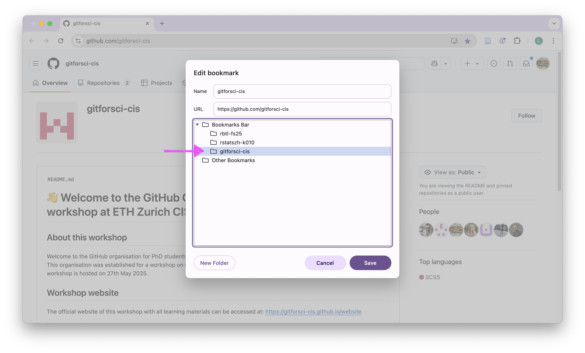

Test your setup
In this task, we will test if your setup is complete and working. You will also already perform the first steps of using Git version control and GitHub.
Step 1: Accept invitation from GitHub
Confirm that you have completed the pre-course survey and let me know on Element that you did not yet receive an email from GitHub to accept the invitation to the gitforsci-cis organization. I will send you an invitation.
- Open your email that you used to register for your GitHub account.
- Fine the email from GitHub with the subject “[GitHub] @larnsce invited you to join the ‘gitforsci-cis’ organization”.
- Click on the link in the email to accept the invitation and work through the steps that follow in your browser to accept the invitation.
Step 2: Create a bookmark
- Open the landing page for the GitHub organization ‘gitforsci-cis’: https://github.com/gitforsci-cis
- Bookmark this page in your browser.
- Organize the bookmark into a folder called “gitforsci-cis” or similar.

- Use this folder to add other bookmarks that are relevant for this workshop (e.g. the workshop website)
Step 3: Clone a repository
Open the landing page for the GitHub organization ‘gitforsci-cis’: https://github.com/gitforsci-cis (try to use your bookmark)
Navigate down the page to the section “Repositories” and use the search field to find the repository called
01-setup-rainbow-train-USERNAMEwhere USERNAME is your GitHub username.
- Click on the repository name to open it.
Let me know on Element that your repository is not there. I will create it for you.
- Click on the green “Code” button.
- Copy the HTTPS URL to your clipboard by clicking on the clipboard sign.
- Open the RStudio IDE on your laptop.
I am working on MacOS, but the steps should be similar on Windows.
- Click on File > New Project in the top menu bar
- Click on Version Control.
- Click on Git.
- Click on Browse… button.
- Create a folder structure for Git repositories (e.g.
~/Documents/gitrepos/gh-org-gitforsci-cis)
I highly recommend storing folders that are Git repositories separate from other folders. This will help you to keep track of your Git repositories and avoid confusion with other folders.
Create this directory structure locally on your laptop and not in folders that are synced with cloud storage (e.g. Google Drive, Dropbox, OneDrive, etc.).
In your directory structure, you can create a folder called gitrepos. Inside this folder, you can create subfolders for each GitHub organization you are working with (e.g. gh-org-gitforsci-cis). A subfolder for your personal profile would be gh-rainbow-train. If you also work with GitLab or other Git hosting platforms, use the abbreviation for the platform in the folder name (e.g. gitrepos/gh-rainbow-train, gitrepos/gl-rainbow-train, etc.).
This strategy will help you to keep track of your Git repositories and the respective platforms and organisations they belong to.
- Paste the HTTPS URL from GitHub into the “Repository URL” field.
- Click on the “Create Project” button.
- Find the Files tab in the bottom right pane of RStudio.
Step 4: Introduce yourself to Git
In the Files tab, find the file called
git-configuration.qmdand click on it to open it in the editor pane (top left window).Follow the instructions inside the file to introduce yourself to Git.
Step 5: Commit and push your changes
- Navigate to the Git pane in the top-right window of RStudio

- Check the box next to the git-configuration.qmd and git-configuration.html file to stage them for commit
- Click on the “Commit” button.
A new window will open. In the top left corner, you will see the files that you have staged for commit. In the bottom windows, you can see the changes you made in the file. The top right corner shows the “Commit message” which cannot be blank. Each Commit requires a Commit message.
- Enter commit message in the “Commit message” field. For example: “complete git configuration”
- Click on the “Commit” button
- Close the window that pops up.
- Click on the “Push” button
Above the top left window, you will now see the sentence “Your branch is ahead of ‘origin/main’ by 1 commit”. This means that you have made changes to your local repository that are not yet pushed to GitHub. It also means that your Commit was successful.
- Enter your GitHub username and GitHub Personal Access Token (PAT) in the “Username” and “Password” fields.
You need to enter the GitHub Personal Access Token (PAT) as a password. You created it in step 5 of the pre-course work to authenticate your GitHub account and push your changes to GitHub.
- Does the pop window say
HEAD -> mainas the final statement? Close it. If not, copy what it says and get in touch on Element now.
- Verify that the changes have been pushed to GitHub by refreshing the page in your browser.
Is the window in the top left empty? This means that you have no changes to commit.
Has the sentence “Your branch is ahead of ‘origin/main’ by 1 commit” disappeared? This means that your changes have been pushed to GitHub successfully.
Step 6: Open an issue on GitHub
Open the landing page for the GitHub organization ‘gitforsci-cis’: https://github.com/gitforsci-cis (try to use your bookmark)
Navigate down the page to the section “Repositories” and use the search field to find the repository called
01-setup-rainbow-train-USERNAMEwhere USERNAME is your GitHub username.Click on the repository name to open it.
Click on the “Issues” tab.
- Click on the green “New issue” button.
- In the “Add a title” field write: “Completed test setup tasks”.
- In the “Add a description” field, leave me a comment and tag the course instructor @larnsce.
- In the “Assignees” field, assign yourself by selecting your GitHub username.
Congratulations! Your setup is complete and you have mastered the key steps of using Git and GitHub. Now onto some important reading and I will see you in class.